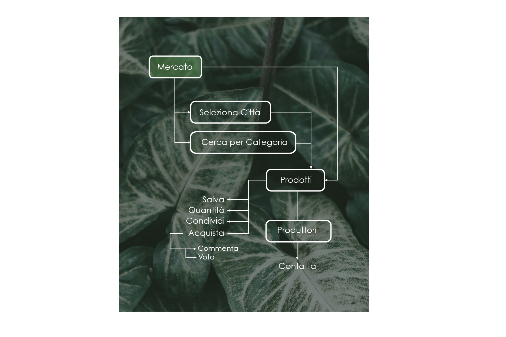

Nome del progetto e repository github
Nome del progetto: GreenGO
Repository del sito di presentazione progetto: https://github.com/SoNet-2017/GreenGo
Repository del prototipo (codice): https://github.com/SoNet-2017/GreenGo-code
Membri del team
| Matricola | Cognome | Nome | GitHub | |
|---|---|---|---|---|
| 242002 | Abate | Stefania | stefaniaabate93@gmail.com | stefaniaabate |
| 236181 | Baldassarri | Ludovica | ludovicabaldassarri@gmail.com | LudovicaBaldassarri |
| 240219 | Faà | Giovanna | faa.giovanna@gmail.com | GiovannaFaa |
Presentazione del concept
Vision
GreenGO è un social network che nasce per rispondere alle esigenze
delle persone che vogliono
avvicinarsi ad
uno stile di vita ecosostenibile.
Permette di trovare informazioni sulle tematiche dell'ecologia e
di
trovare
contatti nel proprio contesto reale. Vuole dar modo agli utenti di trovare ispirazione e di
esserlo a
loro
volta per gli altri.
Rispetto agli altri social network incentrati sulle tematiche "green", questo social ha la
peculiarità
di incoraggiare gli utenti a condividere informazioni (come ricette e tutorial) e
di
facilitare la ricerca di produttori locali e la partecipazione a gruppi di acquisto.
Target
Il nostro target è costituito da uomini e donne dai venti ai cinquant'anni interessati alle
tematiche
dell'ecologia e allo stile di vita così detto "green".
GreenGo è pensato per le persone a cui sta a
cuore la qualità della propria vita, nel rispetto del pianeta e di chi lo abita. Per chi pensa,
non
necessariamente abbracciando in modo radicale una causa, di poter cambiare il proprio impatto sul
mondo
attraverso le proprie scelte quotidiane, a partire dal consumo consapevole.
Personas
Valentina
- 23 anni, studentessa
- Vive a Torino dove studia ingegneria informatica. Fa attività fisica, è appassionata di fotografia e video e viaggia molto
- Creativa in cucina, attiva su Instagram, promuove lo stile di vita salutare
Tommaso
- 30 anni, designer
- Attento all’ambiente, vorrebbe più consigli per uno stile di vita ecosostenibile
- Abita a Torino, vive da solo e lavora come graphic designer

Scenarios
 Creare uno scenario di utilizzo del social network per ciascuna delle due personas delineate.
È possibile descrivere lo scenario in formato narrativo (max 1000 car) oppure attraverso
sketch o vignette.
Creare uno scenario di utilizzo del social network per ciascuna delle due personas delineate.
È possibile descrivere lo scenario in formato narrativo (max 1000 car) oppure attraverso
sketch o vignette.
Funzionalità e architettura
Funzionalità complete del social network
Inserire una tabella in cui sono elencate (ad alto livello) TUTTE le funzionalità del vostro social network, anche quelle che non compariranno nel prototipo.
| Funzionalità complete | Descrizione |
|---|---|
| Profilo Personale | per presentarsi ed avere la panoramica delle attività di ogni utente |
| Visualizza Profilo Utente | visualizzare il profilo di un'altro utente |
| Home | per visualizzare i contenuti degli utenti seguiti, salvarli, condividerli, mettere like e commentare |
| Ricette | trovare e consigliare una buona ricetta nel rispetto dell’ambiente |
| Tutorial | come salvare gli oggetti per non impattare sul mondo |
| Mercato | trovare i prodotti direttamente dal produttore collaborando in gruppi di acquisto |
| Produttore | proporre prodotti di propria produzione direttamente ad una rete di attivi acquirenti |
| Crea Post | per creare contenuti personalizzati |
| Visualizza Ricetta | visualizzare la pagina della ricetta: ingredienti, procedimento, immagini, recensioni e voti |
| Visualizza Tutorial | visualizzare la pagina del tutorial: materiale, procedimento, immagini, recensioni e voti |
| Visualizza Prodotto | visualizzare la pagina con le specifiche del prodotto: descrizione, produttore, recensioni e voti |
| Pagina Produttore | visualizzare una pagina dedicata al produttore con informazioni base e l'elenco completo dei prodotti che ha disponibili |
| Pagina Produttore Personale | visualizzare la propria Pagina Produttore da cui aggiungere prodotti al Mercato e personalizzare la presentazione |
| Carrello | dove salvare i prodotti prima di acquistarli per migliorare l'esperienza d'acquisto fornendo la possibilità di fare una scelta migliore |
Funzionalità dettagliate da implementare
Inserire una tabella in cui sono elencate SOLO le funzionalità del vostro social network (a basso livello) che COMPARIRANNO NEL PROTOTIPO. Inserire un riferimento alla funzionalità completa a cui fanno riferimento
Se vengono fatte delle semplificazioni inserirle in questa sezione, sotto la tabella.
| Funzionalità | Descrizione | Riferimento funzionalità completa |
|---|---|---|
| Notifiche | Visualizza elenco notifiche | Home |
| Profilo | Visualizza il proprio profilo | Home |
| Carrello | Visualizza i prodotti messi nel carrello in attesa di essere acquistati | Home |
| Cerca | Cerca nel sito: utenti, prodotti, tutorial... | Home |
| Accedi a Ricette | Accedere alla pagina 'Ricette' | Home |
| Accedi a Tutorial | Accedere alla pagina 'Tutorial' | Home |
| Accedi a Mercato | Accedere alla pagina 'Mercato' | Home |
| Creare Post | Creare contenuti personalizzati | Home |
| Mi Piace | Metti "Mi Piace" ad un Post Classico in Bacheca | Home |
| Commenta | Commenta un Post Classico | Home |
| Condividi | Condividi sulla tua pagina il post | Home |
| Apri Post | Apri il post | Home |
| Visualizza Profilo Utente | Visualizza il profilo di un utente direttamente dal post che ha condiviso | Home |
| Creare Post Classico | Creare un generico posto con testo o condividendo contenuti esterni tramite link | Crea Post |
| Tagga Amici | Tagga gli amici nel post che stai creando | Crea Post |
| Allega una foto al Post | Allega una foto al contenuto del Post Classico | Crea Post |
| Creare Post Ricetta | Aggiungere una ricetta compliando un format che guidi l'utente ad inserire tutte le informazioni necessarie: ingredienti, procedimento, foto | Crea Post |
| Creare Post Tutorial | Aggiungere un tutorial compilando un format che guidi l'utente ad inserire tutte le onformazioni necessarie: materiale, procedimento, foto | Crea Post |
| Modifica Foto Profilo | Modificare la foto del proprio profilo | Profilo Personale |
| Modifica Informazioni | Modifica le informazioni personali | Profilo Personale |
| Creare Post | Creare contenuti personalizzati | Profilo Personale |
| Elimina Post | Eliminare un post condiviso | Profilo Personale |
| Visualizza Ricettario | Vedi il Ricettario in cui trovare le ricette salvate e quelle proprie | Profilo Personale |
| Visualizza Tutorial | Visualizza la raccolta dei tutorial salvati e quello pubblicati da te | Profilo Personale |
| Gruppi d'Acquisto | Visualizza tutti i Gruppi d'Acquisto a cui stai partecipando e quelli a cui hai partecipato in passato | Profilo Personale |
| Medaglie | Visualizza tutte le medaglie collezionate | Profilo Personale |
| Diventa Produttore/Pagina Produttore | Crea/Visualizza la propria Pagina Produttore | Profilo Personale |
| Segui | Segui l'utente per visuaizzare i contenuti che pubblica nella bacheca della Home | Visualizza Profilo Utente |
| Ricettario | Visualizza l'elenco delle ricette create dall'utente e quelle che ha salvato | Visualizza Profilo Utente |
| Tutorial | Visualizza l'elenco dei tutorial aggiunti dall'utente e quelli che ha salvato | Visualizza Profilo Utente |
| Gruppi d'Acquisto | Visualizza l'elenco dei Gruppi d'Acquisto a cui l'utente partecipa | Visualizza Profilo Utente |
| Medaglie | Visualizza la raccolta delle medaglie che l'utente ha ottenuto | Visualizza Profilo Utente |
| Filtra | Filtrare ricette in base alla categoria, difficoltà, tempo e dieta | Ricette |
| Cercare per Ingredienti | Cercare una ricetta per nome di un ingrediente specifico | Ricette |
| Visualizzare una Ricetta | Aprire una ricetta | Ricette |
| Salvare una Ricetta | Salvare una ricetta nel proprio Ricettario | Ricette |
| Cerca per Categoria | Cercare un tutorial in base ad una categoria specifica | Tutorial |
| Cerca per Oggeto | Cercare un tutorial in base ad un tipo di oggetto | Tutorial |
| Visualizzare un Tutorial | Aprire una tutorial | Tutorial |
| Salvare un Tutorial | Salvare una tutorial nel proprio elenco | Tutorial |
| Seleziona Città | Trovare i prodotti disponibili per la città selezionata | Mercato |
| Cerca per Categoria | Cercare i prodotti filtrando per categoria: verdura, frutta... | Mercato |
| Visualizza Prodotto | Aprire la pagina con le specifiche del prodotto | Mercato |
| Aggiungi al Carrello | Aggiungere un prodotto al Carrello | Mercato |
| Seleziona Quantità | Selezionare la quantità che si vuole acquistare per un prodotto | Mercato |
| Recensisci Ricetta | Commentare una ricetta | Visualizza Ricetta |
| Vota Ricetta | Lascia un voto da 1 a 5 | Visualizza Ricetta |
| Vota Ricetta | Lascia un voto da 1 a 5 | Visualizza Ricetta |
| Visualizza Profilo Utente | Visualizza il profilo dell'autore della ricetta | Visualizza Ricetta |
| Recensisci Tutorial | Commentare un tutorial | Visualizza Tutorial |
| Vota Tutorial | Lascia un voto da 1 a 5 | Visualizza Tutorial |
| Visualizza Profilo Utente | Visualizza il profilo dell'autore del tutorial | Visualizza Tutorial |
| Seleziona Quantità | Selezionare la quantità che si vuole acquistare per un prodotto | Visualizza Prodotto |
| Aggiungi al Carrello | Aggiungere un prodotto al Carrello | Visualizza Prodotto |
| Partecipa al Gruppo d'Acquisto | Partecipa direttamente al gruppo d'acquisto senza salvare prima nel Carrello | Visualizza Prodotto |
| Recensisci Prodotto | Lascia una recensione per un prodotto acquistato | Visualizza Prodotto | Vota Prodotto | Lascia un voto da 1 a 5 | Visualizza Prodotto |
| Contatta Produttore | Manda un messaggio diretto al Produttore | Visualizza Prodotto |
| Visualizza Pagina Produttore | Visualizza la pagina del Produttore | Visualizza Prodotto |
| Segui | Segui il produttore per visualizzare nella bacheca della Home i nuovi prodotti che mette su Mercato | Pagina Produttore |
| Visualizza Profilo Utente | Visualizzare il profilo personale del produttore a cui è associata la pagina | Pagina Produttore |
| Visualizza Prodotto | Visualizza la pagina del prodotto tra l'elenco di tutti i prodotti che il produttore ha reso disponibili per l'acquisto | Pagina Produttore |
| Aggiungi al Carrello | Aggiungere un prodotto al Carrello | Pagina Produttore |
| Seleziona Quantità | Selezionare la quantità che si vuole acquistare per un prodotto | Pagina Produttore |
| Modifica Descizione | Modificare la breve descrizione di presentazione della pagina produttore | Pagina Produttore Personale |
| Modifica Immagine/Logo | Modificare l'immagine/logo per personalizzare la propria pagina produttore | Pagina Produttore Personale |
| Aggiungi Prodotto | Aggiungere un nuovo prodotto sul Mercato | Pagina Produttore Personale |
| Visualizza Messaggi Diretti | Visuallizza i messaggi diretti inviati dagli acquirenti | Pagina Produttore Personale |
| Partecipa al Gruppo d'Acquisto | Partecipa al gruppo d'acquisto | Carrello |
| Elimina Prodotto | Eliminare il prodotto tra l'elenco di quelli salvati nel Carrello | Carrello |
| ... | ... | ... |
Architettura dell'informazione

Mockup
Inserire il mockup realizzato con Balsamiq
Video
Inserire il video di "promozione" del vostro social network
Valutazione con gli utenti
Profilo degli utenti
Descrizione sintetica di tutte le caratteristiche degli utenti che hanno partecipato alla valutazione del prototipo. Tale descrizione deve necessariamente contenere almeno il numero degli utenti, l'età, il genere e le caratteristiche rilevanti nel caso specifico del vostro social network (ad esempio il corso di studio e l'anno se studenti, oppure la professione, oppure gli interessi, ...)
Strumenti della valutazione
Questa sezione deve contenere gli strumenti usati durante la valutazione (questionari e/o traccia delle interviste)
Risultato della valutazione
Questa sezione deve contenere la sintesi dei risultati della valutazione, possibilmente in forma di grafici
Analisi critica e lavoro futuro
Questa sezione deve contenere una breve analisi degli eventuali problemi riscontrati durante la valutazione e le modifiche da implementare nella (ipotetica) seconda versione del prototipo